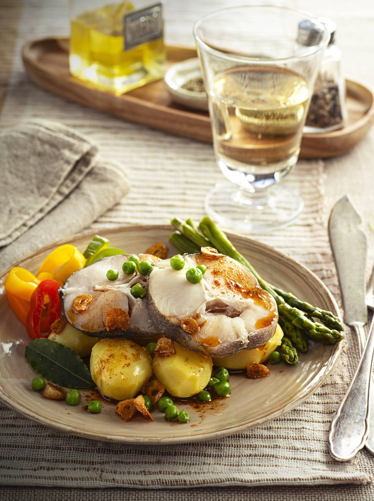

MERLUZA AL VAPOR A LA GALLEGA

TIEMPO: 45 minutos
INGREDIENTES
- 700 g de merluza en rodajas
- 3 ajos, 1 manojo de espárragos verdes
- 400 g de patatas para vapor
- 200 g de guisantes congelados
- 3 pimientos pequeños de colores
- Pimentón dulce, 1 hoja de laurel, aceite, sal, pimienta blanca
PREPARACIÓN
- Paso 1. Pelar y lavar las patatas. Retirar el final del tallo de los espárragos, lavarlos y escurrirlos. Limpiar los pimientos, lavarlos y cortarlos en rodajas de ½ cm. Secar la merluza y salpimentarla.
- Paso 2. Cocer las verduras. Poner agua con la hoja de laurel lavada en una olla con rejilla para cocinar al vapor. Colocar las patatas sobre la rejilla y cocerlas durante unos 10 min.
- Paso 3. Agregar el resto de los vegetales y cocer todo junto durante 10 min más; comprobar que están casi hechas y, si no, dejarlas unos minutos más.
- Paso 4. Añadir el pescado: colocar las rodajas de merluza sobre las verduras y dejar que se cueza al vapor entre 4-6 min, dependiendo del grosor.
- Paso 5. Hacer el refrito mientras se pelan los ajos y se cortan en láminas. Calentar ligeramente 75 ml de aceite de oliva suave, añadir el ajo y dejar que se dore, con suavidad, vigilando que no se quemen.
- Paso 6. Apartar la mezcla del fuego, agregar el pimentón dulce y remover. Servir la merluza con los vegetales y regar con la salsa de pimentón y ajo.